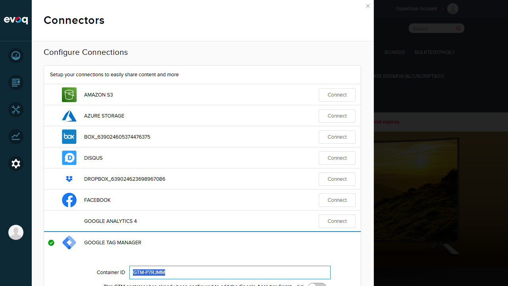
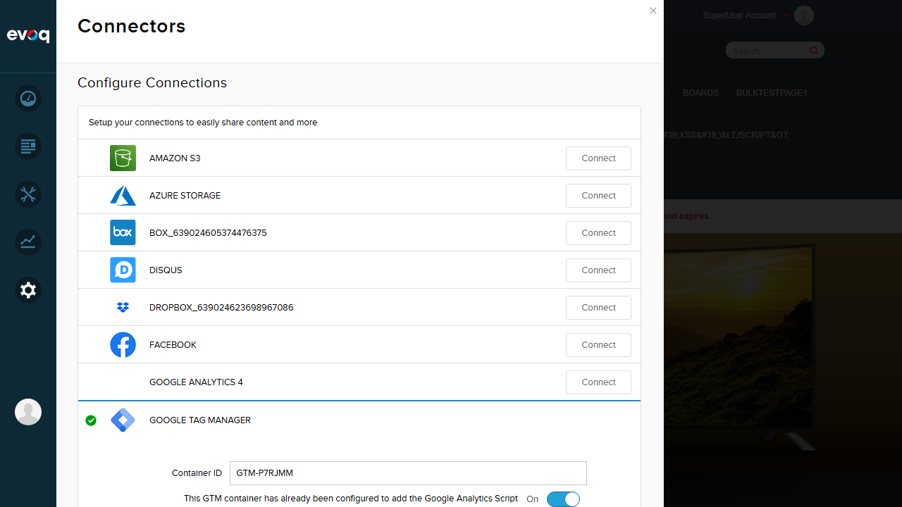
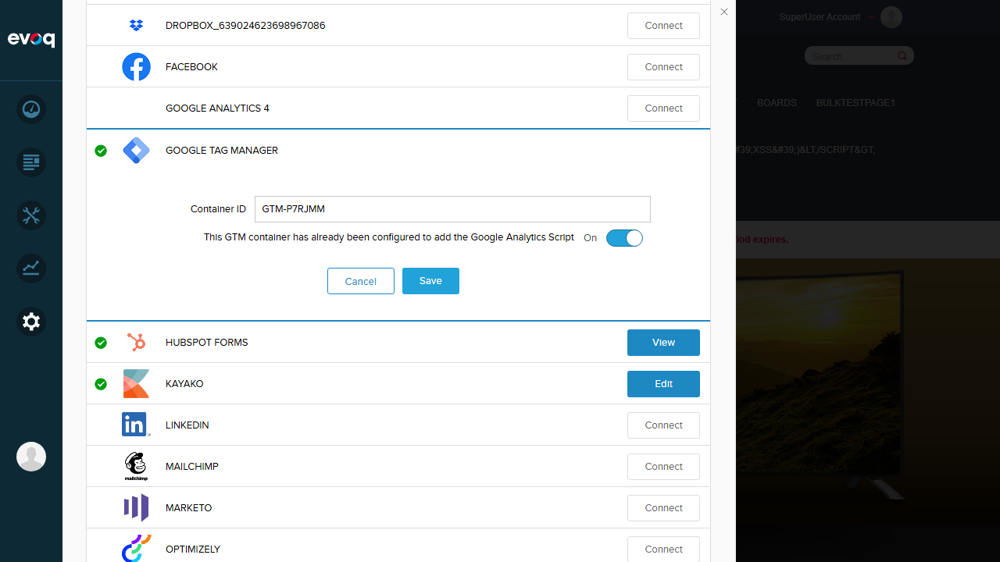
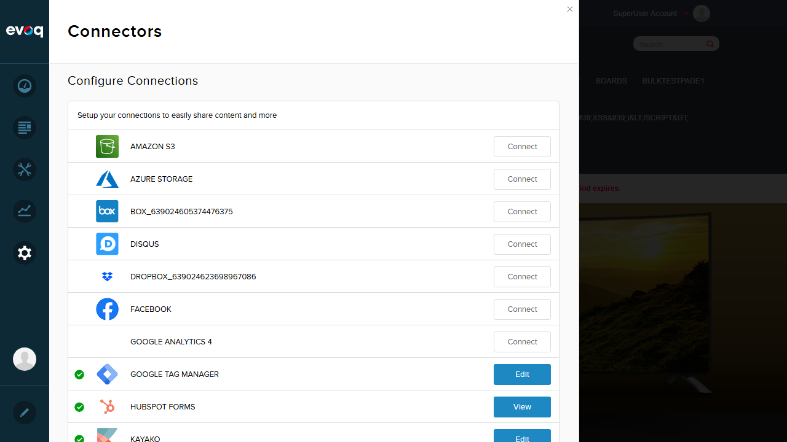
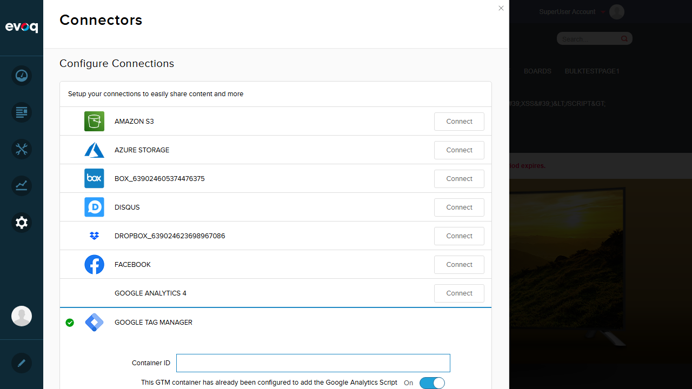

Test Report: Google Analytics Integration
Feature Information
| Extension | Evoq.GoogleTagManagerConnector |
|---|
| Feature Name | Google Analytics Integration |
|---|
| Description | Option to use Google Tag Manager for Google Analytics tracking instead of native GA implementation |
|---|
| UI Location | Admin > Settings > Connectors > Google Tag Manager |
|---|
| Priority | High |
|---|
| Test Date | January 6, 2026 |
|---|
Test 1: Enable GA through GTM Checkbox
PASS
What was tested
Verified that the "Use Google Analytics through GTM" checkbox can be enabled and the setting is saved correctly.
Steps taken
- Navigated to Admin > Settings > Connectors
- Clicked Edit on Google Tag Manager connector
- Verified Container ID was present (GTM-P7RJMM)
- Clicked the toggle to enable "This GTM container has already been configured to add the Google Analytics Script"
- Clicked Save button
- Verified "Item successfully saved" message appeared
Screenshots
Initial state (checkbox Off):

Checkbox enabled (On):

Save confirmation:

Test 2: Verify eaSendGaEvents Flag in dataLayer When Enabled
PASS
What was tested
Verified that when the GA checkbox is enabled, the eaSendGaEvents flag in the dataLayer is set to true.
Steps taken
- With GA checkbox enabled, navigated to the home page
- Executed JavaScript:
window.dataLayer
- Verified the first dataLayer push contains
"eaSendGaEvents": true
Result
[{"eaSendGaEvents":true,"pageVariant":"Default"},{"gtm.start":1767725489767,"event":"gtm.js",...}]
Screenshot

Test 3: Disable GA through GTM Checkbox
PASS
What was tested
Verified that the "Use Google Analytics through GTM" checkbox can be disabled and the setting is saved correctly.
Steps taken
- Navigated to Admin > Settings > Connectors
- Clicked Edit on Google Tag Manager connector
- Verified checkbox was currently On
- Clicked the toggle to disable (turn Off)
- Clicked Save button
- Verified "Item successfully saved" message appeared
Screenshot
Checkbox disabled (Off):
Test 4: Verify eaSendGaEvents Flag is False When Disabled
PASS
What was tested
Verified that when the GA checkbox is disabled, the eaSendGaEvents flag in the dataLayer is set to false.
Steps taken
- With GA checkbox disabled, navigated to the home page
- Executed JavaScript:
window.dataLayer
- Verified the first dataLayer push contains
"eaSendGaEvents": false
Result
[{"eaSendGaEvents":false,"pageVariant":"Default"},{"gtm.start":1767725539738,"event":"gtm.js",...}]
Screenshot

Test 5: Automatic Disable When Container ID is Cleared
PASS
What was tested
Verified that when the Container ID is cleared and saved, the GA checkbox is automatically set to Off (disabled) by the server-side logic.
Steps taken
- Opened Google Tag Manager connector settings
- Enabled the GA checkbox (turned On)
- Cleared the Container ID field (made it empty)
- Clicked Save button
- Reloaded the page
- Verified the status row shows "Off"
- Verified dataLayer shows
eaSendGaEvents: false
Code Reference
From GoogleTagManagerConnector.cs (lines 87-89):
if (string.IsNullOrEmpty(containerId))
{
PortalController.UpdatePortalSetting(portalId, Constants.UseTagManagerForGASettingName, "False", true);
}
Screenshots
Before save (empty container ID, checkbox On):

After reload (status shows Off):

Test 6: Checkbox State Persists After Save
PASS
What was tested
Verified that the checkbox state (both On and Off) persists correctly after saving and page reload.
Steps taken
- Enabled the GA checkbox and saved
- Reloaded the page
- Verified the Connectors list shows status "On" for Google Tag Manager
- Disabled the GA checkbox and saved
- Reloaded the page
- Verified the Connectors list shows status "Off" for Google Tag Manager
Result
The checkbox state correctly persists after save in both enabled and disabled states.
Test Summary
| Test Scenario |
Status |
| Enable GA through GTM checkbox |
PASS |
| Verify eaSendGaEvents flag in dataLayer when enabled |
PASS |
| Disable GA through GTM checkbox |
PASS |
| Verify flag is false when disabled |
PASS |
| Test automatic disable when container ID is cleared |
PASS |
| Verify checkbox state persists after save |
PASS |
Overall Result: 6/6 Tests Passed (100%)
Observations
- dataLayer Structure: The GTM script pushes
eaSendGaEvents as the first item in the dataLayer array, followed by the pageVariant value which defaults to "Default" for non-personalized pages.
- Script Template: The eaSendGaEvents flag is controlled by the
[USETAGMANAGERFORGA] placeholder in GoogleTagManager.config which is replaced with "true" or "false" based on the checkbox setting.
- Server-side Validation: The automatic disable feature works correctly - when container ID is empty, the server automatically sets UseTagManagerForGA to "False" regardless of the UI checkbox state.
- UI Note: When clearing the container ID, the UI checkbox may briefly show as "On" until the page is refreshed, but the server correctly saves it as "Off".